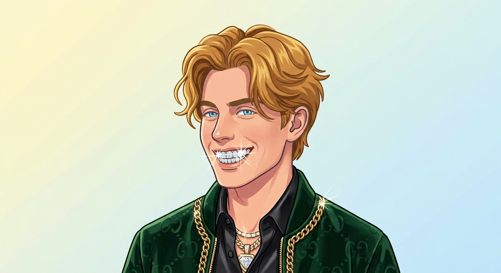

Kedves, Vicces, Sportos
Ujhegyi Milán vagyok. Kiskunfélegyházán a Szent Benedek PG-ben tanulok szoftverfejlesztést.
Nagyon szeretek sportolni, sorozatozni és a barátaimmal lógni. Kedvenc tevékenységem mostanság a tenisz, itt egyszerre tudok sportolni és a barátaimmal lógni.
De néha csak szívesebben lustulnék otthon.
Bár nem is itt születtem de na.
Minden csongrádi kedvenc helye, a Körös-torok
Legkedvencebb sportom
Pörög mindennap a zene
Big T-vel összebújunk és olvassuk az izgalmas spicy könyveket.
Kunbaját nem fogom beleírni mert elég gatya
„ Big T zenéje actually jó. - Albert Epstein”
Készítette: Ujhegyi Milán · 2026 · Vissza a lap tetejére
Iskolai gyakorlófeladat. képek: ai, Google